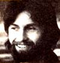

HOME GROWN MUSIC
Marc Bristol-a homegrown musician who performs regularly throughout the Pacific Northwest-began sharing his knowledge of do-it-yourself entertainment with MOTHER readers back in issue 50. Marc's columns have touched on everything from access information for recorded music to detailed instructions on how to make your own instruments. Marc is interested in hearing any suggestions, comments, or questions you may have about the subject of do-it-yourself music, and he'll try to write about requested topics in future columns. Address your correspondence-for this column and this column only-to Marc Bristol, Dept. T MEN, P.O. Box 25 , Duvall Washington 98019.
Well, folks, I've finally hit one of the "keynotes" of my musicmaking career. Not only is my book, Homegrown Music, at the printer right this very minute [to order your copy from Mother's Bookshelf (restricted) , see page 126], but my original album, entitled This Feelin', is at long last finished and ready to be heard! And I'll tell you right now, it wasn't easy getting all my tunes down on cassette ... but it sure was fun!
Before producing This Feelin', I'd had practically no recording experience at all (with my own or anyone else's material). Oh, I had made a few cuts with the Okie Doke Band (the group I play with most often), but I'd been limited to performing my original songs solo and live (as opposed to with a backup for a recording). So, as you'd likely imagine, I had a lot to learn. For one thing, I had no idea how to arrange music-that is, to put all the vocals and instrumentals together-and I couldn't afford to hire a professional to do the job, either. Therefore, I knew right away that I was going to have to rely pretty heavily on my own skill-and intuition-to see myself through (as well as on the help of the folks I chose to play backup on the album).
So keeping all this in mind-plus my inability to schedule much rehearsal time be. fore the first recording session-I proceeded to try to find a seasoned, talented, and creative group of fellow musicians to help me out! And after some scouting, I did manage to put just such a band together. Some of the group were members of the Okie Dokes ... others I'd known from living room jam sessions . . . and the rest I'd located by attending open-mike sessions in local commercial establishments.
Once we began our limited practice sessions, I was amazed at how well we all worked together. There was constant give and take ... with one person, say, doing a rhythm lick while another took the spotlight and did a "fill" (a short lyrical run played during an appropriate break in the main melody). We jelled so well, in fact, that after a while it became apparent that we really didn't need a professional arranger. So I simply chose whichever instruments I wanted for each tune (of course, I didn't make my picks without a good deal of input from the rest of the band), and then I let the musicians decide on their own parts. Surprisingly enough, we got along just fine as ensemble arrangers!
As you can imagine, it didn't take me long-to realize just how lucky I was to have real professionals working with me, because-as it turned out-we ended up recording most of the album live (so to speak). In other words, rather than trying, to lay down a separate track for each instrumental or vocal part-for later overdubbing (a process that can take hours ) and mixing (refining sounds to get an even quality)-we tried to get down as much of the whole group sound on one track as we could. This way, we usually had to worry only about mixing.
Of course, one of the main reasons we taped this way was financial ... since it helped avoid much of the cost that would normally be added by dubbing. As you're probably aware, most recording studios charge anywhere from a low of around $25 to well over $200 an hour for the use of their equipment ... so, realizing that 60 minutes adds up fast, I figured we needed to make the most of our studio time.
Besides, once we became involved in the taping, we actually began to enjoy ourselves, because we felt the special exhilaration that occurs when everyone is concentrating and working off-and with-each other. And I believe that this feeling of excitement carried through to the finished album ... giving it an honest, natural quality that might well have been lost through extensive (and expensive!) overdubbing.
At one point, I even tried to avoid further cost by attempting to put down a tune that wouldn't need future mixing. But let me warn you, if you use this technique ( and I don't advise it ), you're going to have to rely pretty heavily on having a good engineer in the booth ... one who has a solid understanding of electronics plus a ready ability to blend different sounds (at the moment when he or she hears them), and a keen awareness of what your music is all about. After this one experiment, I reverted to mixing after (not during) taping: The additional cost was well worth it!
Of course, we did run into some unforeseen problems during our taping, and one of the most difficult to deal with was loss of enthusiasm for a song. This occurred when we were forced to play the same tune over a number of times. Suddenly the solos would lose their sparkle, and more mistakes (rather than fewer) would start to crop up. To remedy this situation, I did what most professionals have done for years ... which was to make block diagrams for each musician that charted every chord (measure by measure) of a number and gave the exact order of the solos. That way, each person knew -ahead of time-when he or she was supposed to do what. The charts worked, too ... and pretty soon we were able to get a song down in only one or two takes, rather than 10 or 20!
The most annoying technical difficulty we had to contend with was leakage (when. sound from one instrument bleeds into the mike of another in the same room). In general, we kept this problem under control by being careful of where we all sat and how far from the instruments we placed the mikes. The studio was also equipped with two isolation booths (closet-sized rooms with sliding glass doors) to cut down on leakage still further. I usually stood in one booth and played my guitar and sang, while the bass player generally used the other. (When we employed a drummer on a tune, we let him take over a booth ... since the sounds of his instruments, obviously, were the most likely to leak!) A musician standing in one of these spaces could still see to get visual cues, but the "boxed in" players were forced to get used to wearing headphones in order to hear what was going on. In general, though, the booths-combined with our careful attention to seating and microphone placement-proved to be adequate solutions to the leakage problem.
I wish I had the space to pass on ev ery thing I learned in making my album, but some things you'll just have to discover when you try to do the same yourself. I'll close by saying that-if you are thinking making our own recording-don't be couraged by how complicated and ex sive the whole process appears to be fro the outside. Because if you arrange your own material ... enlist talented musicians to back you up ... and maintain a strong determination to work hard at making sure the final sound is just what you want, then- once you're inside the studio-you'll find that creating a tape in a professional situation can feel just as natural and laid-back as jamming with friends in your own room. (And wouldn't it be nice if you, too could capture This Feelin' on your homegrown album?)
EDITOR'S NOTE. Marc Bristol's album is available, on cassette tape, from King Noodle Records, Dept. TMEN, Box 25, Duval , Washington 98019 for $8.00 postpaid.
|
 |
|
|